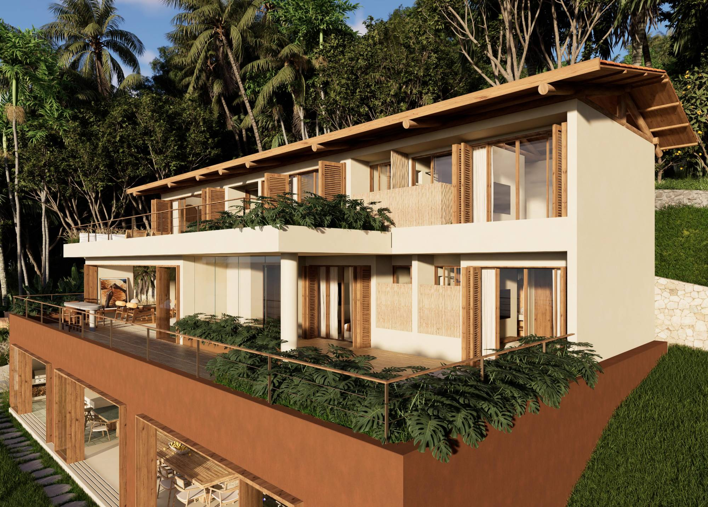
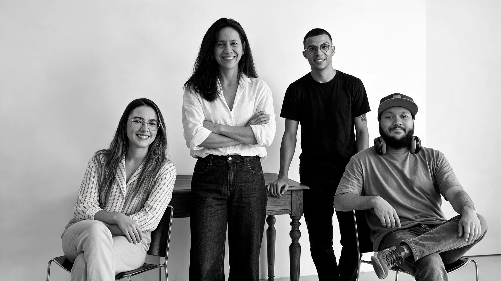

Arquitetura que acolhe
e reconecta.
Projetos personalizados + acompanhamento de obra · 30 anos
Há 30 anos criamos uma arquitetura que acolhe, inspira e reconecta as pessoas em um mundo cada vez mais acelerado.
Reunimos referências de contato com a natureza, viagens e repertórios culturais — da inovação do design contemporâneo às origens da arquitetura vernacular — para chegar a resultados autênticos, funcionais e equilibrados.
Nossa missão é traduzir a essência, a história e a identidade de cada cliente em projetos atemporais e únicos, sem impor um estilo rígido nem seguir apenas modismos.
Projetos

Pedra, madeira, luz, vento e verde.
Encontramos na naturalidade e na atemporalidade dos materiais o valor afetivo e sustentável da composição arquitetônica — mesclando o novo com o antigo para levar aconchego, conforto e bem-estar a quem vive os espaços.
Materiais naturais e atemporais
Pedras, madeiras, plantas, peças recicladas com história e superfícies texturizadas — escolhas que envelhecem bem e carregam afeto.
Luz e ventilação naturais
Aberturas, sombreamentos e fluxos de ar desenhados para o conforto real, com menos dependência de sistemas artificiais.
O novo em diálogo com o antigo
Do design contemporâneo às origens vernaculares, honramos o que já existe e acrescentamos o que o tempo pede.
A identidade de quem habita
Sem estilo imposto: cada projeto traduz a essência, a história e a rotina de quem vai viver ali.
Da primeira conversa à obra finalizada
Um caminho feito junto, etapa por etapa
Escuta
Visita, conversa e leitura do lugar. Entendemos a história, a rotina e os desejos de quem vai viver o espaço.
Concepção
Estudo preliminar com a ideia do projeto: implantação, volumes, luz, ventilação, materiais e paisagem.
Projeto
Desenvolvimento completo de arquitetura e interiores, com detalhamento para a execução.
Obra
Acompanhamento da execução até a obra finalizada, garantindo fidelidade ao que foi projetado.
Memórias de obra, viagens e natureza
À frente do escritório há cerca de 30 anos, Tey Romeiro reúne em cada projeto as referências que a formaram: o contato com a natureza, as viagens, os repertórios culturais e as memórias de infância em canteiros de obra — sensações táteis e visuais que se transformam em arquitetura.
O escritório atua nos segmentos residencial, corporativo e comercial, arquitetura de edificações, interiores e decoração, desenvolvendo projetos para construções e reformas — da concepção inicial à execução e à obra finalizada.
“Minha primeira intenção foi honrar essa arquitetura tão singular — seus volumes, suas curvas — trazendo-a para a atualidade com leveza.”Tey Romeiro, sobre o retrofit da Casa Real Park

Arquitetos e projetistas que conduzem cada projeto com rigor técnico, sensibilidade e presença — da concepção à obra finalizada.
Vamos conversar sobre o seu próximo projeto?
Escritório
R. Pres. Rodrigues Alves, 82
Centro — Mogi das Cruzes, SP
08710-170